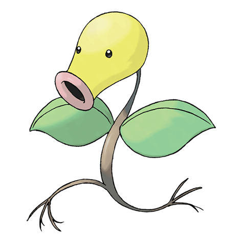
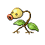

Назад
Беллспраут

Беллспраут — Покемон 1 поколения под номером 69 в Покедекс. Обитает он в регионе Канто и относится к Травяному и Ядовитому типу. Тонкое и гибкое тело Беллспраута позволяет ему изгибаться и раскачиваться, чтобы избежать любой атаки, какой бы сильной она ни была. Этот Покемон выплёвывает едкую жидкость, плавящую даже железо.
Тип:
Травяной
Ядовитый
Эволюция

# 069 Беллспраут
=>
# 070 Випинбелл